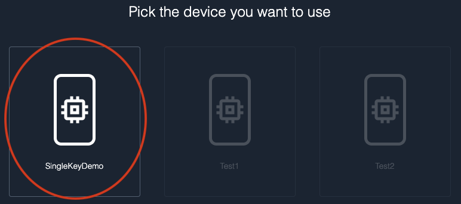
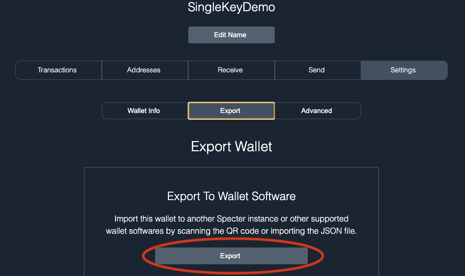
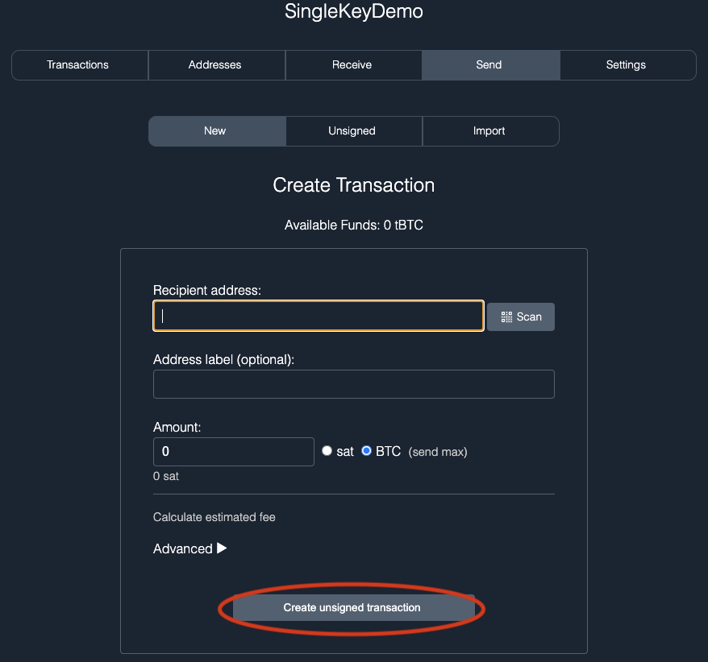
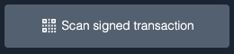

Using a Single-key Wallet
This guide assumes you have already created a mnemonic. If that is not the case, head over to the Generating a Mnemonic page and complete those steps first.
Create the wallet¶
First, enter your mnemonic into Krux and make sure to select Single-key before proceeding. The choice of single-key vs. multisig at this point will change the derivation information used to generate your extended master public key (xpub) which will affect how Specter Desktop classifies it.

In Specter Desktop, you will need to import your public key by adding a new device. Press the Add new device button on the left side of the app.

Krux is not listed as one of the available device types on the Add Device screen, so you will need to select the Other option.

You will be taken to the Upload Keys screen where you can choose to Scan QR code.

On your Krux, navigate to the Public Key (xpub) option under the main menu and show this QR code to Specter Desktop.

It should import the xpub and display the Purpose as #0 Single Sig (Segwit).

Give the device a name and press Continue. You should now see the device in the devices list on the left side of the app.

Now that you've added a device with your key to Specter Desktop, you can make a wallet using it. Press the Add new wallet button on the left side of the app.
Choose to create a Single key wallet when it asks which type of wallet you want on the following screen.

Now, select the device you just added.

Give your wallet a name and make sure to select Segwit for the wallet type, then press Create wallet.

Congrats, you just created a single-key wallet with your key!
Receive coins¶
The next screen should show your first receive address that you can send funds to.

Load the wallet¶
Now, load the wallet into Krux by going to the Settings page in Specter Desktop, then click the Export tab. There, press the Export button to display a QR code of your wallet.

In Krux, select the Wallet menu item option and scan the QR code.

If it worked, Krux should display the wallet information that it loaded:

Send coins¶
Now, you can send funds! Go to Send in Specter Desktop, fill out the information, and click Create unsigned transaction.

You will now see a screen listing the devices in your wallet. Select the device you want to sign the transaction (PSBT) with.

Specter Desktop will display an animated QR code of the PSBT that you can scan with Krux by going to Sign PSBT in its main menu. After scanning, Krux should display info about the transaction for you to confirm before signing.

Once you have confirmed, Krux will begin animating a QR code of the signed transaction that you can scan into Specter Desktop.

In Specter Desktop, click Scan signed transaction and show it the QR. Each part of the QR code that is read will receive a ghost icon to indicate progress.

Once all parts of the QR code have been read, you should see a window popup asking you to broadcast the transaction. Click Send transaction and your transaction should be broadcasted to the network!

🎉
TODO
TODO
TODO